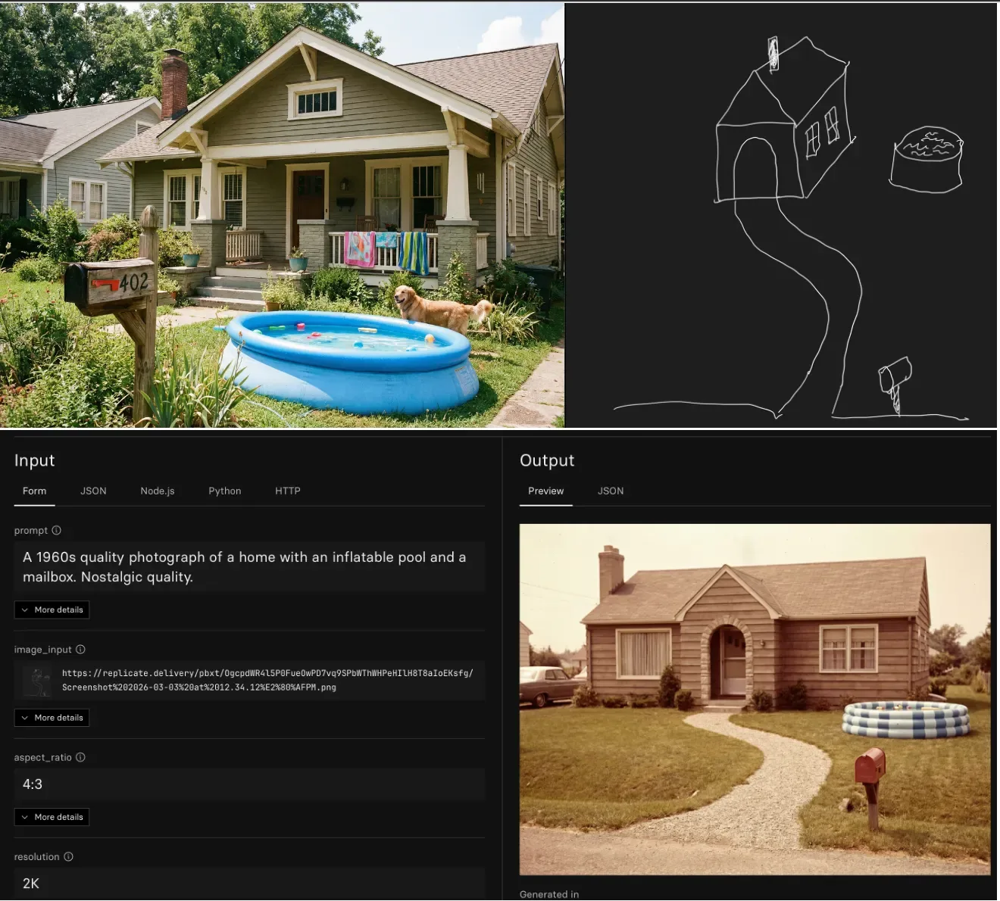

"Credette Cimabue ne la pittura / tener lo campo, e ora ha Giotto il grido" "Cimabue thought to hold the field in painting; now Giotto has the cry"
Dante, Purgatorio, Canto XI
Imagine a world made only of text. Bullet points. Prose. That is what most people picture when they think about AI.
You can go to ChatGPT and generate an image. But what comes back rarely matches what you had in your head, and there is no good way to correct it through text alone. You describe it differently. The model ignores you. You describe it again.
There is a whole other part of AI that most people never find. It belongs to artists. People who use these tools not to let AI make the creative decisions, but to fill in the gaps. The analogy I keep coming back to: a broad brushstroke instead of a small one. You still paint. The brush is just bigger.
The easiest place I have found to start is replicate.com. You pick a model and you give it two things: a sketch of what you want, and a prompt. I usually write the prompt with some help from AI, but the idea and the reference image are mine.
What that combination gives you is something a text prompt alone cannot: a consistent visual identity. Your brand. Your idea at higher fidelity than your sketch.
The difference is the same one Dante noticed in Purgatory, talking to Oderisi, a master illuminator. Cimabue held the field. Then Giotto showed up with a different approach to the same tools. The question is not whether AI can paint. The question is whether you are the one holding the brush.

Upper left: generic house generated by AI based on this prompt “A photograph of a home with an inflatable pool and a mailbox.” Upper right, a sketch on iPad for what I really want the image to look like. Bottom, replicate.com NanoBananaPro image with an input and an updated prompt.
The You Are The Artist Protocol
Hand draw what you have in mind. It does not need to be good. A sketch on paper, a napkin diagram, a rough shape on your phone. Take a picture. Now you have a reference image, and the model has a constraint it cannot ignore.
Go to replicate.com and find a model that supports image-to-image generation (I prefer NanoBananoPro. Upload your sketch as the input image. Write a prompt describing how the final version should look, what style, what mood, what to keep and what to change. If you are not sure how to write the prompt, open a chat with an AI and describe what you drew. Ask it to write the image prompt for you.
Run it. Look at what comes back.
The output will be closer to your idea than anything a text prompt alone produces, because the model is now translating your drawing, not its interpretation of your words. When it is wrong, you can see exactly where. Change the sketch. Change the prompt. Run it again.